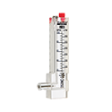
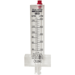
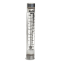
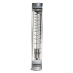

Blue-White
Harrington is a Supplier of high-quality Blue-White flowmeters. Blue-white flowmeters are used to measure fluid passing through, ensuring fluid control processes run smoothly, safely, and cost-effectively. Our meters support a wide range of material connection types, including: CPVC, PVDF, brass, polypropylene, acrylic, and PVC. Select your product to request a quote, get additional information, and purchasing options.

per EA · Sign in for price- Blue-White Series F-300 Flowmeter One-Piece Cast Acrylic Body, Low Flow, 20 to 100 GPM / 75 to 375 LPM, Saddle Connection, PTFE Float, Neoprene Gasket, for 1-1/2" PVC Pipeper EA · Sign in for price
- Blue-White Series F-300 Flowmeter One-Piece Cast Acrylic Body, Standard Flow, 9 to 30 GPM / 30 to 120 LPM, Saddle Connection, 316 Stainless Steel Float, Neoprene Gasket, for 1-1/2" CTS Pipeper EA · Sign in for price
- Blue-White Series F-300 Flowmeter One-Piece Cast Acrylic Body, Standard Flow, 40 to 150 GPM / 150 to 550 LPM, Saddle Connection, 316 Stainless Steel Float, Neoprene Gasket, for 2" PVC Pipeper EA · Sign in for price
- Blue-White Series F-300 Flowmeter One-Piece Cast Acrylic Body, Low Flow, 40 to 150 GPM / 150 to 550 LPM, Saddle Connection, PTFE Float, Neoprene Gasket, for 2" PVC Pipeper EA · Sign in for price

Blue-White Series F-300 Flowmeter One-Piece Cast Acrylic Body, Standard Flow, 5 to 35 GPM / 20 to 140 LPM, Saddle Connection, 316 Stainless Steel Float, Neoprene Gasket, for 1" PVC Pipeper EA · Sign in for price- Blue-White Series F-300 Flowmeter One-Piece Cast Acrylic Body, Standard Flow, 5 to 35 GPM / 20 to 140 LPM, Saddle Connection, 316 Stainless Steel Float, Neoprene Gasket, for 1" CTS Pipeper EA · Sign in for price
- Blue-White Series F-300 Flowmeter One-Piece Cast Acrylic Body, Standard Flow, 15 to 75 GPM / 60 to 280 LPM, Saddle Connection, 316 Stainless Steel Float, Neoprene Gasket, for 1-1/4" PVC Pipeper EA · Sign in for price
- Blue-White Series F-300 Flowmeter One-Piece Cast Acrylic Body, Standard Flow, 20 to 100 GPM / 75 to 375 LPM, Saddle Connection, 316 Stainless Steel Float, Neoprene Gasket, for 1-1/2" PVC Pipeper EA · Sign in for price
- Blue-White Series F-300 Flowmeter One-Piece Cast Acrylic Body, Standard Flow, 20 to 100 GPM / 75 to 375 LPM, Saddle Connection, 316 Stainless Steel Float, Neoprene Gasket, for 1-1/2" CTS Pipeper EA · Sign in for price
- Blue-White Series F-300 Flowmeter One-Piece Cast Acrylic Body, Standard Flow, 40 to 150 GPM / 150 to 550 LPM, Saddle Connection, 316 Stainless Steel Float, Neoprene Gasket, for 2" PVC Pipeper EA · Sign in for price
- Blue-White Series F-300 Flowmeter One-Piece Cast Acrylic Body, Standard Flow, 40 to 150 GPM / 150 to 550 LPM, Saddle Connection, 316 Stainless Steel Float, Neoprene Gasket, for 2" CTS Pipeper EA · Sign in for price
- Blue-White Series F-300 Flowmeter One-Piece Cast Acrylic Body, Standard Flow, 60 to 240 GPM / 225 to 900 LPM, Saddle Connection, 316 Stainless Steel Float, Neoprene Gasket, for 2-1/2" PVC Pipeper EA · Sign in for price
- Blue-White Series F-300 Flowmeter One-Piece Cast Acrylic Body, Standard Flow, 80 to 300 GPM / 300 to 1125 LPM, Saddle Connection, 316 Stainless Steel Float, Neoprene Gasket, for 3" PVC Pipeper EA · Sign in for price
- Blue-White Series F-300 Flowmeter One-Piece Cast Acrylic Body, Low Flow, 40 to 140 GPM / 160 to 520 LPM, Saddle Connection, PTFE Float, Neoprene Gasket, for 3" PVC PipeCall for availabilityAsk a branch
- Blue-White Series F-300 Flowmeter One-Piece Cast Acrylic Body, Standard Flow, 125 to 500 GPM / 550 to 2000 LPM, Saddle Connection, 316 Stainless Steel Float, Neoprene Gasket, for 4" PVC Pipeper EA · Sign in for price
- Blue-White Series F-300 Flowmeter One-Piece Cast Acrylic Body, Standard Flow, 250 to 1050 GPM / 900 to 3900 LPM, Saddle Connection, 316 Stainless Steel Float, Neoprene Gasket, for 6" PVC Pipeper EA · Sign in for price
- Blue-White Series F-300 Flowmeter One-Piece Cast Acrylic Body, Standard Flow, 500 to 1900 GPM / 2000 to 7200 LPM, Saddle Connection, 316 Stainless Steel Float, Neoprene Gasket, for 8" PVC Pipeper EA · Sign in for price

Blue-White Series F-400N Flowmeter, 0.050 to 0.500 GPM / 0.2 to 2.0 LPM, 1/4" Female NPT Polypropylene Adapter, 316 Stainless Steel Float, 316 Stainless Steel Guide Rod, 100mm Scaleper EA · Sign in for price- Blue-White Series F-400N Flowmeter, 0.050 to 0.500 GPM / 0.2 to 2.0 LPM, 3/8" Female NPT Polypropylene Adapter, 316 Stainless Steel Float, 316 Stainless Steel Guide Rod, 100mm Scaleper EA · Sign in for price
- Blue-White Series F-400N Flowmeter, 0.025 to 0.250 GPM / 0.1 to 1.0 LPM, 1/4" Female NPT Polypropylene Adapter, PVDF Float, 316 Stainless Steel Guide Rod, 100mm Scaleper EA · Sign in for price
- Blue-White Series F-400N Flowmeter, 0.025 to 0.250 GPM / 0.1 to 1.0 LPM, 3/8" Female NPT Polypropylene Adapter, PVDF Float, 316 Stainless Steel Guide Rod, 100mm Scaleper EA · Sign in for price
- Blue-White Series F-400N Flowmeter, 0.1 to 1.0 GPM / 0.4 to 4.0 LPM, 1/4" Female NPT Polypropylene Adapter, PTFE Float, 316 Stainless Steel Guide Rod, 100mm Scaleper EA · Sign in for price
- Blue-White Series F-400N Flowmeter, 0.1 to 1.0 GPM / 0.4 to 4.0 LPM, 3/8" Female NPT Polypropylene Adapter, PTFE Float, 316 Stainless Steel Guide Rod, 100mm Scaleper EA · Sign in for price
- Blue-White Series F-400N Flowmeter, 0.1 to 1.0 GPM / 0.4 to 4.0 LPM, 1/2" Female NPT Polypropylene Adapter, PTFE Float, 316 Stainless Steel Guide Rod, 100mm Scaleper EA · Sign in for price
- Blue-White Series F-400N Flowmeter, 0.75 to 7.5 GPM / 1 to 10 LPM, 3/8" Female NPT Polypropylene Adapter, 316 Stainless Steel Float, 316 Stainless Steel Guide Rod, 100mm ScaleCall for availabilityAsk a branch
- Blue-White Series F-400N Flowmeter, 0.2 to 2.0 GPM / 1.0 to 7.5 LPM, 1/4" Female NPT Polypropylene Adapter, 316 Stainless Steel Float, 316 Stainless Steel Guide Rod, 100mm Scaleper EA · Sign in for price
- Blue-White Series F-400N Flowmeter, 0.2 to 2.0 GPM / 1.0 to 7.5 LPM, 3/8" Female NPT Polypropylene Adapter, 316 Stainless Steel Float, 316 Stainless Steel Guide Rod, 100mm Scaleper EA · Sign in for price
- Blue-White Series F-400N Flowmeter, 0.2 to 2.0 GPM / 1.0 to 7.5 LPM, 1/2" Female NPT Polypropylene Adapter, 316 Stainless Steel Float, 316 Stainless Steel Guide Rod, 100mm Scaleper EA · Sign in for price
- Blue-White Series F-400N Flowmeter, 0.3 to 3.0 GPM / 1.5 to 11.0 LPM, 3/8" Female NPT Polypropylene Adapter, 316 Stainless Steel Float, 316 Stainless Steel Guide Rod, 100mm Scaleper EA · Sign in for price
- Blue-White Series F-400N Flowmeter, 0.3 to 3.0 GPM / 1.5 to 11.0 LPM, 1/2" Female NPT Polypropylene Adapter, 316 Stainless Steel Float, 316 Stainless Steel Guide Rod, 100mm Scaleper EA · Sign in for price
- Blue-White Series F-400N Flowmeter, 0.5 to 5.0 GPM / 2.0 to 20.0 LPM, 3/8" Female NPT Polypropylene Adapter, 316 Stainless Steel Float, 316 Stainless Steel Guide Rod, 100mm Scaleper EA · Sign in for price
- Blue-White Series F-400N Flowmeter, 0.5 to 5.0 GPM / 2.0 to 20.0 LPM, 1/2" Female NPT Polypropylene Adapter, 316 Stainless Steel Float, 316 Stainless Steel Guide Rod, 100mm Scaleper EA · Sign in for price

Blue-White Series F-410N Flowmeter, 1 to 10 GPM / 4 to 38 LPM, 3/4" Female NPT Polypropylene Adapter, 316 Stainless Steel Float, 316 Stainless Steel Guide Rod, 127mm Scaleper EA · Sign in for price- Blue-White Series F-410N Flowmeter, 1 to 10 GPM / 4 to 38 LPM, 1" Female NPT Polypropylene Adapter, 316 Stainless Steel Float, 316 Stainless Steel Guide Rod, 127mm Scaleper EA · Sign in for price
- Blue-White Series F-410N Flowmeter, 2 to 20 GPM / 8 to 80 LPM, 3/4" Female NPT Polypropylene Adapter, 316 Stainless Steel Float, 316 Stainless Steel Guide Rod, 127mm Scaleper EA · Sign in for price
- Blue-White Series F-410N Flowmeter, 2 to 20 GPM / 8 to 80 LPM, 1" Female NPT Polypropylene Adapter, 316 Stainless Steel Float, 316 Stainless Steel Guide Rod, 127mm Scaleper EA · Sign in for price
 Blue-White Series F-420N Flowmeter, 5 to 25 GPM / 20 to 100 LPM, 1-1/2" Male NPT PVC Adapter, 316 Stainless Steel Float, 316 Stainless Steel C-276 Guide Rod, 100mm Scaleper EA · Sign in for price
Blue-White Series F-420N Flowmeter, 5 to 25 GPM / 20 to 100 LPM, 1-1/2" Male NPT PVC Adapter, 316 Stainless Steel Float, 316 Stainless Steel C-276 Guide Rod, 100mm Scaleper EA · Sign in for price- Blue-White Series F-420N Flowmeter, 5 to 25 GPM / 20 to 100 LPM, 1" Female NPT PVC Adapter, 316 Stainless Steel Float, 316 Stainless Steel Guide Rod, 100mm Scaleper EA · Sign in for price
- Blue-White Series F-420N Flowmeter, 8 to 40 GPM / 30 to 150 LPM, 1-1/2" Male NPT PVC Adapter, 316 Stainless Steel Float, 316 Stainless Steel C-276 Guide Rod, 100mm Scaleper EA · Sign in for price